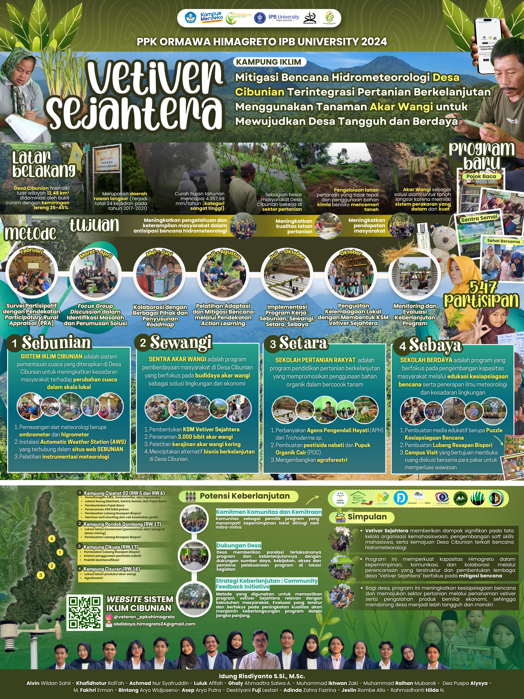

Climate Anxiety in Coastal Communities
A structural evaluation of how environmental variability, sea-level rise risks, and constant livelihood shifts shape functional vulnerability management in dynamic intertidal regions.
A Personal Archive
This page is written as a personal record—an attempt to reopen pages of empirical experiences, thoughts, and discussions that would be unfortunate to let fade away without leaving a trace.
I do not intend to write this as a complex academic summary, but rather as a collection of reflections, perspectives, and personal opinions that are light in tone and inherently subjective. Some may emerge from experience, others from contemplation, and some from conversations that left a lasting impression. I do not know how far I will be able to translate what is on my mind into words here, but I will try to arrange it into a structured and comprehensive documentation that I can return to in the future.

Reflections and collaborative actions alongside grassroots communities.

A structural evaluation of how environmental variability, sea-level rise risks, and constant livelihood shifts shape functional vulnerability management in dynamic intertidal regions.
Climate modeling often reduces the ocean to matrix arrays. Yet, sea-level rise is a physical reality redefining the boundary between human habitats and coastal ecosystems.
Reflections on research methodological standards, building cross-cultural scientific partnerships, and mapping data uncertainties on the global stage.
Internalization of coastal disaster management pipelines, rigorous scientific curiosity, and technology framework adoptions beyond typical classroom boundaries.
The baseline significance of participatory fieldwork and absorbing localized ecological wisdom parameters prior to finalizing structural governance models.